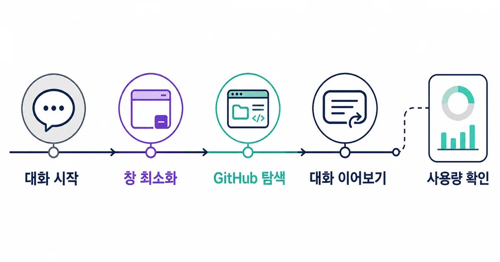
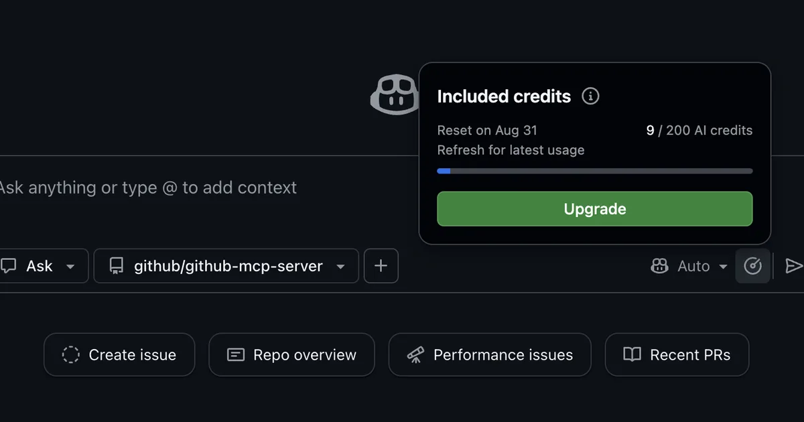

2026. 8. 11 (화) · 약 12분
긴 답변을 기다리는 동안 다른 이슈나 풀 리퀘스트를 확인하려고 탭을 옮겼다가, 조금 전 대화가 어디로 갔는지 찾느라 시간을 쓰는 일이 있다. GitHub가 8월 10일 공개한 Copilot 웹 채팅 개선은 이 작은 마찰을 겨냥한다. 대화창을 접어 둔 채 GitHub를 둘러보고, 최근 대화로 돌아가 문맥을 이어가며, 세션과 메시지 단위 사용량도 같은 화면에서 확인할 수 있게 됐다. 기능은 단순해 보이지만 긴 조사와 코드 설명을 여러 번 오가는 작업에서는 대화를 버리지 않고 관리하는 방식 자체가 달라진다.
오늘의 핵심뉴스
심층 분석 · GitHub Changelog · 2026. 8. 10
GitHub, Copilot 웹 채팅에 최소화·최근 대화·토큰 사용량 표시 추가
GitHub는 github.com의 Copilot Chat에 대화창 최소화, 최근 대화 이어보기, 세션·메시지 단위 토큰 사용량 표시를 추가했다. 단순한 화면 변경으로 보이지만 긴 코드 설명과 저장소 조사를 여러 화면에서 이어갈 때 대화 문맥과 사용량을 관리하는 방법이 달라진다.
답변을 기다리는 동안 GitHub를 계속 볼 수 있다
GitHub 웹에서 Copilot에게 한 저장소의 구조를 설명해 달라고 하거나 여러 파일을 비교해 달라고 하면 답이 길어질 수 있다. 이전에는 채팅 화면을 유지한 채 기다리거나, 다른 페이지로 이동하면서 대화를 다시 찾을 가능성을 감수해야 했다. 새 최소화 기능은 이 사이를 메운다. 응답이 진행 중인 채팅을 접어 두고 이슈, 풀 리퀘스트, 코드 화면을 둘러본 뒤 같은 대화로 돌아올 수 있다. 기다리는 시간과 탐색하는 시간이 서로 밀어내지 않게 된 셈이다.
중요한 점은 채팅을 새로 시작하는 기능이 아니라 진행 중인 문맥을 보존하는 기능이라는 것이다. 예를 들어 Copilot에게 오류 원인을 조사하게 한 뒤, 답변을 기다리는 동안 관련 이슈의 재현 조건과 최근 커밋을 직접 확인할 수 있다. 다시 채팅을 펼쳤을 때는 처음 질문부터 설명할 필요 없이 방금 확인한 커밋이나 파일을 다음 질문에 연결한다. 한 화면 안에서 AI 답변과 저장소 근거를 번갈아 읽는 작업이 자연스러워진다.

이 변화가 특히 유용한 장면은 답변과 원본을 함께 검증해야 할 때다. Copilot이 특정 함수가 병목이라고 설명했다면 해당 파일과 호출 경로를 직접 열어 확인하고, 이슈에 적힌 재현 조건이 답변에 반영됐는지 대조할 수 있다. 채팅이 화면을 독점하지 않으니 답을 그대로 받아들이기보다 GitHub 안의 근거를 확인하는 습관을 만들기 쉽다.
최소화와 최근 대화는 쓰임이 다르다
최소화는 지금 진행 중인 대화를 잠깐 치워 두는 기능이고, 최근 대화는 이전에 시작한 스레드를 다시 찾는 기능이다. 둘을 같은 것으로 보면 오래된 대화를 무작정 이어 쓰기 쉽다. 현재 이슈의 답을 기다리면서 다른 화면을 볼 때는 최소화를 쓰고, 어제 조사하던 저장소나 중단한 질문으로 돌아갈 때는 최근 대화를 연다. 새 문제인데도 과거 문맥이 답을 끌고 간다면 새 대화를 시작하는 편이 낫다.
| 상황 | 알맞은 선택 | 주의할 점 |
|---|---|---|
| 답변 생성 중 다른 이슈나 코드를 확인 | 현재 대화 최소화 | 새 탭에서 별도 대화를 시작하지 않는다 |
| 이전에 조사하던 저장소로 복귀 | 최근 대화 이어보기 | 대화 제목과 대상 저장소를 먼저 확인한다 |
| 전혀 다른 문제를 질문 | 새 대화 시작 | 과거 문맥이 새 답에 섞이지 않게 분리한다 |
| 긴 대화의 소비량을 확인 | 토큰 사용량 아이콘 | 표시값을 비용 상한과 같은 의미로 보지 않는다 |
대화 제목도 단순한 정리 습관 이상으로 중요해진다. 최근 대화 목록이 있어도 ‘버그 질문’, ‘코드 설명’처럼 넓은 이름만 남으면 어느 저장소와 이슈의 문맥인지 구분하기 어렵다. 저장소 이름, 문제, 기준 시점을 짧게 묶어 두면 며칠 뒤에도 이어갈 대화와 버릴 대화를 빠르게 가를 수 있다. 결과가 확정되면 대화 안에만 두지 말고 이슈 댓글, 풀 리퀘스트 설명, 설계 문서로 옮겨야 협업 기록으로 남는다.
토큰 표시가 비용 상한을 뜻하지는 않는다
GitHub는 채팅의 토큰 사용량 아이콘을 누르면 세션과 메시지 단위 사용량을 볼 수 있다고 설명한다. 어떤 한 번의 질문이 대화를 크게 늘렸는지, 한 세션이 어느 정도 길어졌는지 살피는 데 유용하다. 모델마다 입력과 출력 토큰의 가격이 다르므로 사용량이 보이면 모델 선택과 질문 범위를 조절할 단서도 생긴다. 하지만 화면의 사용량 표시 자체가 예산을 자동으로 막아 주거나 청구 금액을 확정하는 장치는 아니다.

2026년 6월 1일 이후 GitHub Copilot의 일반적인 사용량 기반 청구는 선택한 모델과 소비 토큰에 따라 AI Credits를 사용한다. 다만 그 이전부터 유지한 일부 Copilot Pro·Pro+ 연간 구독자는 기간이 끝날 때까지 기존 프리미엄 요청 기반 방식을 쓸 수 있다. 같은 토큰 표시를 보더라도 계정 유형에 따라 실제 청구 해석이 달라질 수 있다는 뜻이다. 비용을 판단하려면 채팅 표시와 별도로 Billing의 AI Credits, 포함 사용량, 추가 예산 설정을 확인해야 한다.
대화 기록은 영구 저장소가 아니다
최근 대화가 잘 보인다고 해서 언제든 같은 기록을 꺼낼 수 있는 것은 아니다. GitHub 문서는 Copilot Chat이 최근 대화 최대 100개를 저장하고, 각 대화의 메시지는 28일 뒤 영구 삭제된다고 안내한다. 메시지가 모두 사라진 대화는 기록에서도 자동으로 제거된다. 중요한 결정과 재현 절차를 채팅에만 남기면 한 달 뒤에는 근거를 찾지 못할 수 있다. 채팅은 생각을 전개하는 작업 공간이고, 저장소의 이슈와 문서는 결과를 남기는 기록 공간으로 나누는 편이 안전하다.
- 대화 제목에 저장소·문제·기준 시점을 짧게 넣는다.
- 응답을 기다릴 때는 창을 최소화하고 관련 코드와 이슈를 직접 확인한다.
- 최근 대화를 이어갈 때 현재 저장소와 질문 문맥이 같은지 먼저 읽는다.
- 토큰 사용량이 급격히 늘어난 메시지는 질문 범위와 선택 모델을 다시 본다.
- 확정된 결론과 재현 절차는 이슈·풀 리퀘스트·문서로 옮긴다.
민감한 저장소를 다룰 때는 보관 기간만 볼 것이 아니라 조직 정책도 확인해야 한다. 대화에 넣은 코드와 파일, 조직이 허용한 모델, 외부로 공유되는 결과의 범위가 회사 규칙과 맞아야 한다. 최근 대화를 편하게 찾을 수 있다는 사실은 더 많은 비밀값이나 고객 데이터를 넣어도 된다는 허가가 아니다. 접근권한과 입력 데이터 경계는 대화 UI와 별개의 문제로 남는다.
긴 대화보다 잘 나눈 대화가 다시 찾기 쉽다
하나의 대화에 설계, 구현, 테스트, 배포 질문을 계속 붙이면 앞선 가정이 뒤의 답에 영향을 준다. 최근 대화가 편해졌다고 모든 일을 한 스레드에 모을 이유는 없다. 저장소 탐색과 한 문제의 원인 분석처럼 문맥 공유가 중요한 질문은 이어가고, 새로운 기능 설계나 다른 저장소 문제는 새 대화로 분리하는 편이 결과를 읽고 검증하기 쉽다. 토큰 사용량도 자연스럽게 줄어들 수 있다.
| 확인할 것 | 이어가기 | 새 대화 |
|---|---|---|
| 대상 저장소 | 같은 저장소와 같은 영역 | 다른 저장소 또는 완전히 다른 모듈 |
| 핵심 문제 | 같은 오류의 원인과 후속 검증 | 새 기능이나 별도 장애 |
| 앞선 가정 | 계속 유효하고 검증됨 | 틀렸거나 더 이상 필요 없음 |
| 남길 결과 | 한 이슈의 조사 기록 | 독립된 문서나 풀 리퀘스트 |
이 기준은 사용량을 줄이기 위한 요령만은 아니다. 연구진이 1,356개 오픈소스 저장소의 AI 대화 13,360개와 사용자 메시지 79,172개를 분석한 결과, 거의 모든 대화 뒤에 커밋이 이어졌다. 대화가 실제 변경으로 연결되는 만큼 어느 문맥에서 어떤 결정을 내렸는지 찾을 수 있어야 검토 부담도 줄어든다. 논문은 다른 사람이 만든 AI 코드가 자신의 AI 코드보다 유지보수하기 어렵다고 느끼는 경향도 보고했다. 대화와 결과를 연결해 남기는 일이 개인 편의가 아니라 협업 품질과 맞닿아 있는 이유다.
편해진 화면보다 작업 기록의 위치를 먼저 정한다
새 기능을 가장 잘 쓰는 방법은 채팅을 많이 쌓는 것이 아니다. 진행 중인 답변은 최소화해 기다리는 시간을 활용하고, 같은 문제는 최근 대화에서 이어가며, 다른 문제는 새 대화로 분리한다. 사용량 아이콘은 긴 세션을 알아차리는 신호로 쓰고, 비용은 Billing 설정에서 다시 확인한다. 이 정도만 구분해도 대화 목록은 단순한 기록함이 아니라 현재 작업으로 돌아가는 지도가 된다.
GitHub가 추가한 세 기능은 모두 화면을 덜 끊기게 만들지만, 최종 결과를 어디에 남길지는 대신 정해 주지 않는다. 채팅에서 나온 결론이 코드 변경으로 이어졌다면 해당 커밋과 이슈에 근거를 남기고, 팀이 반복해서 쓸 판단 기준이라면 문서로 옮긴다. 그래야 28일 뒤 메시지가 사라져도 왜 바꿨는지는 저장소에 남는다.
참고한 자료
웹 채팅의 최소화와 최근 대화 이어보기는 더 긴 답을 만드는 기능이 아니라, 답을 기다리는 시간과 다시 맥락을 만드는 시간을 줄이는 기능이다. 여기에 토큰 사용량 표시가 더해지면서 대화가 얼마나 길어졌는지도 확인할 수 있다. 다만 보이는 사용량을 비용 상한이나 영구 보관으로 오해하면 안 된다. 중요한 작업은 대화 제목과 연결 대상을 분명히 남기고, 결과는 이슈·풀 리퀘스트·문서처럼 저장소가 관리하는 기록으로 옮기는 습관이 여전히 필요하다. 다음 긴 Copilot 대화에서는 창을 닫지 말고 최소화한 뒤 관련 이슈를 확인하고, 다시 돌아왔을 때 문맥과 사용량이 어떻게 유지되는지 확인해 보자.